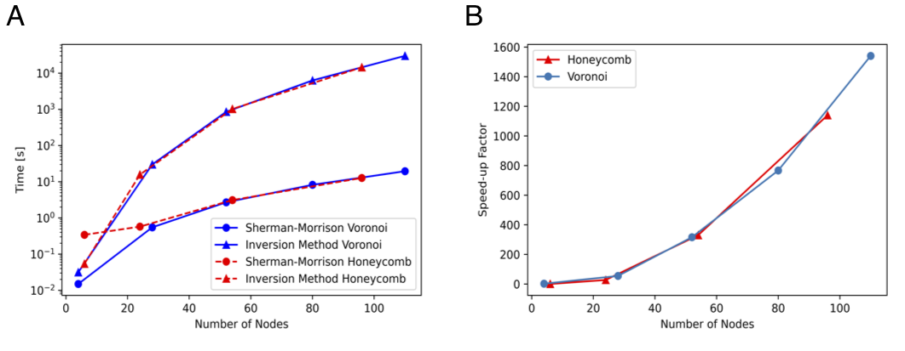

Unstructured Mesh Fokker-Planck Equation
One of the most popular stochastic reaction-diffusion models for studying cellular processes is the lattice reaction-diffusion master equation (RDME). While there are many benefits in using an RDME-like model (i.e. it can be simulated using existed computational programs), there is one drawback to the RDME. In the continuum limit as the mesh spacing approaches zero in the RDME in two or more dimensions, bimolecular reactions like A + B --> C are lost. Recently a new and convergent RDME-like model, called Convergent RDME (CRDME), was developed for irreversible bimolecular reactions on Cartesian grids to resolve such problem.
While reversible reactions are frequently observed in biochemical processes, the geometric effects of the cellular domains are found important in modulating interactions among molecules, this project generalized the CRDME to reversible reactions, unstructured grids, and drift-diffusion, enabling the study of a broader variety of cellular processes.
Fast Solver for Diffusive Transport Times on Dynamic Intracellular Networks
The transport of particles in cells is influenced by the properties of intracellular networks they traverse while searching for localized target regions or reaction partners. Moreover, given the rapid turnover in many intracellular structures, it is crucial to understand how temporal changes in the network structure affect diffusive transport. In this work, we use network theory to characterize complex intracellular biological environments across scales. We develop an efficient computational method to compute the mean first passage times for simulating a particle diffusing along two-dimensional planar networks extracted from fluorescence microscopy imaging. We first benchmark this methodology in the context of synthetic networks, and subsequently apply it to live-cell data from endoplasmic reticulum tubular networks.
The neuromuscular junction (NMJ) in D. melanogaster ER network analysis
S2 cell ER network analysis
Computation time and efficiency comparison of the original method and the optimized method using the Sherman-Morrison formula
Emergence of Different Collective Cell Migratory Modes
Cooperative cell migration can result from interactions among cells or external signals. Without external cues, cells coordinate with each other to produce diverse migratory patterns. Despite extensive studies, the primary contributor at the cell-cell junction driving this coordination remains unclear. Experimental research has shown distinct migratory patterns in pairs of Dictyostelium cells. In approximately 80% of the time, each cell generates a contractile traction force dipole independently, while in the remaining 20% of the time, two cells fuse into a single contractile traction force dipole. Building on these observations, I used a two-dimensional (2D) model extended from previous work to further quantify mechanisms associated with these patterns. This research seeks to identify the mechanical mechanisms at the cell-cell junction that determine collective migration patterns.
The Vessel Wall Geometry vs. The Motion of Red Blood Cells
The geometry of the blood vessel wall plays a regulatory role on the motion of red blood cells (RBCs). The overall topography of the vessel wall depends on many features, among which the endothelial lining of the endothelial surface layer (ESL) is an important one. Changes in the ESL structure are believed to cause vascular hyperpermeability and entrap immune cells during sepsis, which could significantly alter the vessel wall geometry and disturb interactions between RBCs and the vessel wall, including the wall-induced migration of RBCs and the thickening of a cell-free layer. To investigate the influence of the vessel wall geometry particularly changed by the ESL under various pathological conditions, such as sepsis, on the motion of RBCs, we developed two models to represent the ESL using the immersed boundary method in two dimensions. We find that the spatial variation of the wall has a significant effect on the wall-induced migration of the RBC for a high permeability, and that the wall-induced migration is significantly inhibited as the vessel diameter is increased.
The Influence of Molecular Reach and Diffusivity on the Efficacy of Membrane-confined Reactions
Signaling by surface receptors often relies on tethered reactions where an enzyme is bound to the cytoplasmic tail of a receptor to facilitate interactions. The overall length and stiffness of the tail, the enzyme, and the substrate together determine a biophysical parameter termed the molecular reach. Although the signaling pathways of immune receptors have been extensively studied, the role of molecular reach is still less well understood; and the design of experiments to facilitate such studies remains an open question. This project contributes to the solution to these problems by focusing on the membrane-confined reactions among immune checkpoint receptors and applying both numerical simulations and analytical tools to study the dephosphorylation reactions among these receptors.
This site was created with the Nicepage